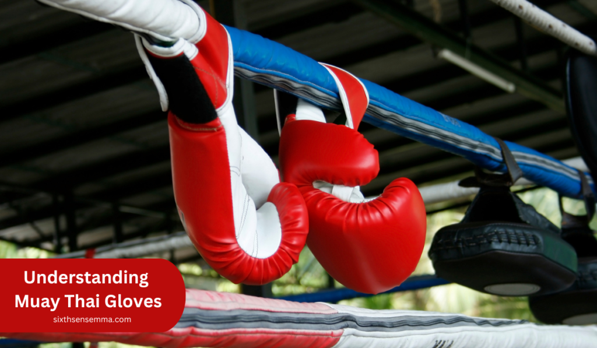
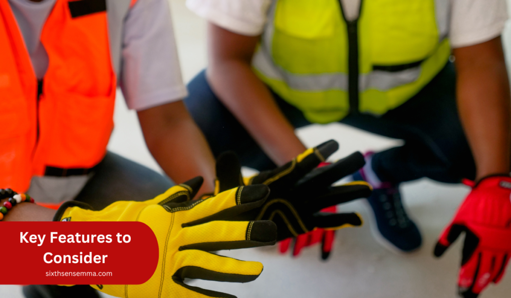

Muay Thai Gloves: The Ultimate Guide to Choosing Wisely

Muay Thai Gloves: The Ultimate Guide to Choosing Wisely! The process of selecting the ideal pair of Muay Thai gloves is one of the main reasons that can improve all areas of your training as well as fighting in the ring. A pair of gloves designed to fit correctly will help you to train better as well as prevent injury during sparring and fighting. Gloves also act as a tool for safety and protection, which is a necessary part of training Muay Thai.
The right gloves are comfortable, provide the requisite level of protection, and support the essential functions that should be executed effectively, but they should be designed in a customer-friendly way that considers the needs of specific individuals. This top Muay Thai gloves article helps you get information about different types of gloves, sizing, and materials among others, to make a savvy decision that will be tailored to your specific needs. The articles are ready now so you can begin right away!

Understanding Muay Thai Gloves
Muay Thai gloves in major ways are the tasks a person would have to go through before being issued a driver`s license. The online community would benefit much more from this tool if the settings were streamlined and error-free. While normal boxing gloves are meant for striking, clinching, and blocking, Muay Thai gloves come equipped with some other features with the striking pads that are impact-resistant.
Consequently, the gloves should have a strong cushion but also be bending to the hand for clinches. Impact while not using the arm viciously is the technique used to practice this kind of fighting.
Purpose and Functionality
Everyone who grabs a pair of gloves in Muay Thai must first understand how to use them so that he is safe and able to give the best result to the rest of the team. The primary goal of MT gloves is to ensure as much as possible the user and the others in the ring are safe. As there is often the danger of injuries, the thighs of the fighters need to be secured properly. Besides, the design can be different such as having more open fingers. Therefore it can be used better for clinch work.
| Purpose | Functionality |
|---|---|
| Protects hands during strikes | Provides cushioning against impacts |
| Allows for clinching | Facilitates control over opponents |
| Ensures safety for training partners | Minimizes risk of injury during sparring |
Types of Muay Thai Gloves
There are varying sets of gloves that are meant to do specific training depending on the trainers and the clients. There are training gloves, sparring gloves, and competition gloves that one can use for anything from home exercise to professional competition.
At different intervals during training, versatility gloves are a good option to use between bag drills and drills with another partner. They offer maximum performance without being tight, which is the uniqueness of their design compared to the other gloves usually used for the same purpose.
Training Gloves
Training gloves are very adaptable and normally provides fine padding. They are an excellent tool for the heavy bag work, pad work, and general training. They are not overly comfortable and yet they are protected enough for daily sessions.
Features of Training Gloves:
- Most often come at weights that range from 12 oz to 16 oz.
- Always provide a lot of cushioning for both your hands and wrists.
- Constructed to be worn for lo.ng times and still come out in good condition
Sparring Gloves
Discover compound Chris Young started using sparring gloves since he was twelve to grow up into the world-class scrapper he is today. A part of learning the sport is the right set of gloves that are usually heavier than those made for the fight. When the shoulders and legs are not very far apart then one is standing with the feet close together else the feet are wide so that they are just a little more than shoulder-width apart.
Key Characteristics of Sparring Gloves:
- Weight typically around 14 oz to 16 oz.
- Give fighters enough padding on their knuckles and wrists.
- Provide the competitors with the required flexibility during the movements.
Competition Gloves
Describing competition gloves with a significant deviation from the classical patterns existing in the regulation of the sport can be a good starting point for the introduction of the new rules. About defining the weight, the fans have to know that Louis had advantageous conditions for surpassing the Americans and the Englishmen since he had ground and aerial artillery without any kind of threat. Every glove is designed according to specific rules and guidelines. Additionally, a proper match of weight and class is necessary for competition.
Specs for Competition Gloves:
- Usually, the gloves are from 10 oz to 12 oz.
- Organizations have to follow concise regulations, especially about the weights and sizes.
- The gloves rather concentrate more on speed and precision and less on cushioning.
Also Read Our Article: Best Martial Arts for Self-Defense: Which Style Suits You?
Sizing and Fit
Clothing your body in a good way is a result of choosing the right size. On this page, I will help you figure out the right way to measure your hands.
Measuring Your Hands
For finding the best match, measuring the hand circumference will be the best starting point: Here’s a clear and practical step-by-step guide to follow:
- Try using a stretchy ruler or a stand of thread.
- You should measure the part of your hand that is most distant to the thumb, that is, take the measurement and subtract the size of the thumb from it.
- Record the measurement you gather and compare it with the list given by the company of the gloves.
Read This Article: What Martial Art Destroys Boxers? Comparing Fighting Techniques for Ultimate Dominance
Understanding Glove Oz (Weight)
The weight of a Muay Thai glove, which often gets cast in ounces, has a reason for it as the weight, size, and purpose are all interrelated:
- 10 oz gloves are used for competition.
- 12 oz gloves would be the right choice for lightweights or beginners.
- 14 and 16 oz gloves have extra padding and are best for training and sparring.
Materials Used in Muay Thai Gloves
The quality and regular functioning of Thai gloves are also affected by the various materials used in making them. Let’s go through the options of materials that are common to see in gloves.
Leather vs. Synthetic
Leather gloves attract customers due to a strong connection with high-quality and high cost. Nonetheless, there is another side of the coin that is even more attractive – leather gloves can be expensive. On the other hand, synthetic gloves are available at a low price where the cost is only one of the perks favored by beginners.
| Material | Pros | Cons |
|---|---|---|
| Leather | Durable, comfortable | More expensive |
| Synthetic | Affordable, lightweight | Shorter lifespan |
Padding Types
Several different types of materials used for padding have an impact on shock absorption and comfort. To be more precise about padding, foam is basic and gel can be implemented to add more comfort and lessen hand pain.
Differences in Padding:
- Foam: Provides basic protection and is commonly found in most well-priced Muay Thai gloves.
- Gel: Undoubtedly, it provides the most cushion, especially for those who are involved in close contact combat sports.

Key Features to Consider
There are certain features that determine the performance and comfort of gloves that one should have in mind. One that is knowledgeable of what should be inspected will have the capacity to take the right path in making the decision that fits best.
Wrist Support
Overuse wrist protection is a primary method of avoiding fractures and sprains in workouts. Some gloves are equipped with Velcro closures, while others are laced. Each way has its advantages and disadvantages, so you may want to think a little bit which one will give you a secure and comfortable feeling.
Ventilation
Breathing through the gloves will not only keep your hands cool during an extended workout but also will make you feel better and more comfortable. Look for the gloves with the holes in the right places to increase the air passing through them.
Design and Aesthetics
Let’s be frank; the primary reason we want our Muay Thai gloves to perform well is that we want them to look good, too! You can find various styles and colors to choose from and among them are the funky and cute like Muay Thai pink gloves. Select the pair that you think goes with your style and makes you want to go training.
Popular Brands and Models
There are various and excellent brands that make high-quality Muay Thai gloves among them are as follows. I will now list down some of the most loved gloves that some of the athletes prefer.
Fairtex
Fairtex’s reputation is mainly attributed to their quality that meets market standards. Their gloves are a perfect blend of comfort and toughness, and therefore are the right choice for both beginners and pros.
Twins Special
One other great option is the Twins Special gloves which are greatly appreciated among the public. Indeed, for their quality and unique features, the gloves sell like hotcakes and thus are the center of gravity for many potential clients. They are underrated and quite frankly, the best gloves in the industry..
Hayabusa
Gloves of Hayabusa company are equipped with the latest modifications in technology to boost the fighter’s performance. Their focus is on the most serious fighters who apply protective gear of the highest caliber.
| Brand | Features | Popular Models |
|---|---|---|
| Fairtex | Comfort, durability | Fairtex BGV1, BGVL3 |
| Twins Special | High quality, diverse designs | Twins Special 16 oz |
| Hayabusa | Tech-enhanced protection | Hayabusa T3, T3 Boxing |
Maintenance and Care
The life span of your gloves is prolonged if you take proper care of them. Here are vital tricks to success in cleaning and maintaining Muay Thai gloves:
Cleaning Techniques
The task of cleaning gloves is simple at least theoretically, but the truth is that it is a common mistake, and many of us neglect it. Usually, you just need to wipe them off initially and then get a mild soap-water solution. That usually works. Stay apart from the use of tough cleansing agents because they can cause damage to the gloves.
Storing Your Gloves
You must find the right place to store your gloves. The right place for your gloves is the part in your house where it is cool and without moisture. Thus, gloves should be placed in a place where they cannot be pressed too hard, and, for example, you can use glove wraps to protect the shape of your gloves.
Choosing the Right Gloves for You
Often, finding the most appropriate set of gloves is about personal preferences and goals. This is a useful way to ensure that you get the right kind of the glove you need.
Novice vs. Experienced Fighters
If you are a newbie, you will most likely need all-round training gloves that provide comfort, while an experienced fighter might opt for competition gloves to get improved performance. If you are a starter, you would want something that is durable, like the Twins Special Muay Thai gloves, that can withstand heavy use.
Individual Training Goals
Reckon your training goals. Do you want to get fit, train for competition, or just take up the sport? Various gloves have different purposes, so choose based on what you want to achieve.
Conclusion
Choosing the right kind of Muay Thai gloves is the main thing for your safe health and good performance in your sports. It is better that you gain a better understanding of these things so that you can make the right decision. A pair of great boxing gloves will make your training a lot smoother!
FAQ’s
You should wear Muay Thai-specific gloves that offer good padding, support, and durability for sparring and training, typically ranging from 10 oz to 16 oz.
Sure! The 14 oz gloves give the mobility still protecting the hand with the padding and are therefore fit for sparring and training.
Yeah, a Muay Thai globes has quite heavy padding on the surface of it. In fact, the thumb is exposed, so you should also consider the edge of the boxing gloves.
Of course, it is. 12-ounce gloves are usually chosen for practicing and developing boxing skills, being especially popular among the thinner practitioners and those with a strong focus on the precision of technique.
It’s advisable to replace your gloves every 6 to 12 months, depending on usage, to keep them clean and safe for practice.
While you can, boxing gloves lack the design features needed for clinch work, making Muay Thai gloves a better choice for this sport.
It is important since the weight and glove size are significant factors directly affecting the protection and performance of a fighter. Hour, and type of a boxing match turns up the gloves of the most suitable weight.
The usage of new gloves can be eased through a plan of action that incorporates using them on every other occasion. Besides, you may take advantage of glove wraps since they also give an extra pair of hands.
Definitely, a brand like Everlast is a good one to go for. Not only they have excellent padding, but they also have great designs that assist in the prevention of sparring mishaps.
Sure! Whether you are male or female, Muay Thai gloves are unisex. Of course, women prefer gloves in good size depending on their palm length. External Resources World Muay Thai Council International Federation of Muay Thai Amateur Muay Thai Training Guide
Train with us in Coppell
The first class is free. Shorts, a t-shirt and a water bottle. We lend the rest.
Book a free class